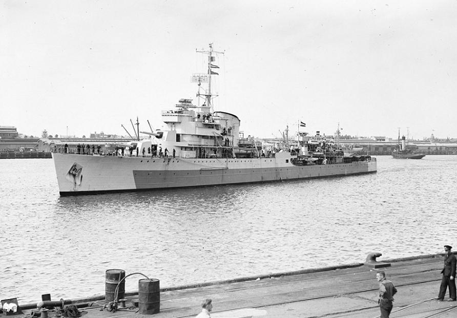
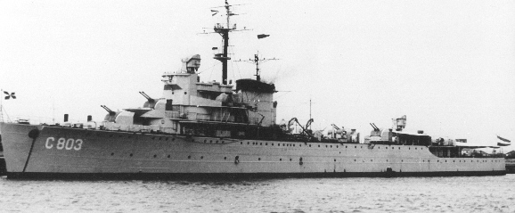

De lichte kruisers van de Tromp-klasse zijn ontworpen als flotilla leiders voor Gerard Callenburgh-klasse torpedobootjagers. Ondanks dat de bewapening gelijkwaardig is aan dat van een lichte kruiser werden de schepen flotilla leiders genoemd om politieke redenen; de Nederlandse regering wilde niet meer grote en nieuwe oorlogsschepen. Maar de Konininklijke Marine had laten onderzoeken dat de Japanse Marine in 1944 18 zware en 27 lichte kruisers tegen de Koninklijke Marine in kon zetten. Op het moment van het onderzoek had de Koninklijke Marine slechts 3 lichte kruisers waarvan de 2 schepen van de Java-klasse sterk verouderd waren en De Ruyter onderbewapend en onderbepantsert was in verband met bezuinigingen; er waren dus snel nieuwe schepen nodig
De Tromp-klasse schepen werden gebouwd onder vlootplan Deckers. Oorspronkelijk werd er slechts één schip besteld, maar toen de bouw van de 'Tromp' eenmaal begonnen was werd er besloten om een tweede schip te bouwen zodra de 'Tromp' te water was gelaten; de 'Jacob van Heemskerck'
'Tromp' werd op 18 augustus 1938 in dienst gesteld en was op weg naar Nederlands-Indië toen Duitsland Nederland binnenviel in de meidagen van 1940, echter 'Jacob van Heemskerck' was nog in aanbouw op dat moment. Per toeval was 'Jacob van Heemskeck' gereed gemaakt om de machine installies te testen, er werden snel 6 20mm machinegeweren en andere uitrusting aan boord gebracht voordat ze onderbemand naar Engeland vertrok en daar de volgende dag aankwam, echter door het uitbreken van de oorlog kon het schip niet met de geplande bewapening afgebouwd worden en werd besloten om het schip'Jacob van Heemskerck' als luchtafweerkruiser af te bouwen.
| Naam | Tromp | Jacob van Heemskerck |
|---|---|---|
| Foto |  |  |
| Waterverplaatsing | 3450 ton | |
| Snelheid | 32.5 knopen | |
| Bemanning | 295, later verhoogt naar 380 | 420 |
| Afmetingen | 132 x 12,4 x 4,3 m | |
| Bewapening | 6x 149 mm Bofors No. 11 (3x2) 6x 533 mm torpedobuizen (2x3) 4x 40 mm Bofors (2x2) 4x 13 mm (2x2) Later gewijzigd: + 4x 75 mm (4x1) + 4x 40 mm Bofors (2x2) + 6x mm Oerlikon - 4x 13 mm (2x2) |
10x 102 mm Mk XVI (5x2) 4 x 40 mm Vickers Mk. 8 (1x4) 6x 20 mm Hispano Suiza (6x1) Later gewijzigd: + 8x 40 mm Bofors Mk. IV (4x2) + 8x 20 mm Oerlikon Mk. V (4x2) |
| Vliegtuigen | 1x Fokker C.XI-W | - |
| In dienst | 18 augustus 1938 | 10 mei 1940 |
| Uit dienst | 20 december 1968 | 20 november 1969 |